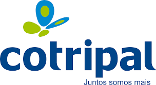
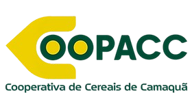

</section>

    <!-- Principais Clientes -->
<section id="clientes" class="clientes-section">
    <div class="clientes-container">
        <h2>Principais Clientes</h2>
        <p class="clientes-subtitulo">Confiança e reconhecimento no setor agrícola.</p>

        <div class="clientes-grid">
            <div class="cliente-card">
                
            </div>

            <div class="cliente-card">
                
            </div>

            <div class="cliente-card">
                
            </div>

            <div class="cliente-card">
                
            </div>

            <div class="cliente-card">
                
            </div>

            <div class="cliente-card">
                
            </div>
        </div>
    </div>
</section>
<style>
/* Seção */
.clientes-section {
    padding: 60px 20px;
    background-color: #f8f9fa;
    text-align: center;
}

/* Container */
.clientes-container {
    max-width: 1200px;
    margin: 0 auto;
}

/* Subtítulo */
.clientes-subtitulo {
    margin-bottom: 40px;
    color: #666;
}

/* Grid */
.clientes-grid {
    display: grid;
    grid-template-columns: repeat(3, 1fr);
    gap: 25px;
}

/* Card */
.cliente-card {
    background: #fff;
    border-radius: 12px;
    padding: 20px;
    display: flex;
    align-items: center;
    justify-content: center;
    height: 120px;
    box-shadow: 0 4px 10px rgba(0,0,0,0.05);
    transition: transform 0.2s ease, box-shadow 0.2s ease;
}

.cliente-card:hover {
    transform: translateY(-5px);
    box-shadow: 0 6px 15px rgba(0,0,0,0.08);
}

/* Imagens padronizadas */
.cliente-card img {
    width: 140px;
    height: 70px;
    object-fit: contain;
}

/* Responsivo (celular) */
@media (max-width: 768px) {
    .clientes-grid {
        grid-template-columns: 1fr;
    }
}

.cliente-card img {
    width: 140px;
    height: 70px;
    object-fit: contain;
}

/* Ajuste individual para logos menores */
.cliente-card img[src*="agrofel"] {
    transform: scale(2.4);
}

.cliente-card img[src*="caul"] {
    transform: scale(1.4);
}

.cliente-card img[src*="coagril"] {
    transform: scale(2);
}

.cliente-card img[src*="cotripal"] {
    transform: scale(1.25);
}

.cliente-card img[src*="coopac"] {
    transform: scale(1.5);
}

.cliente-card img[src*="cotrisul"] {
    transform: scale(1.5);
}
</style>